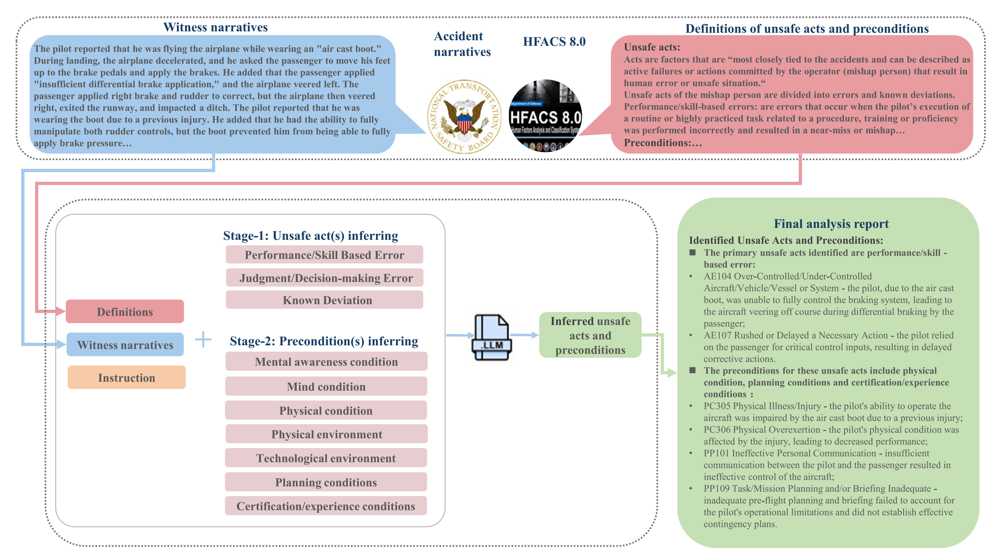
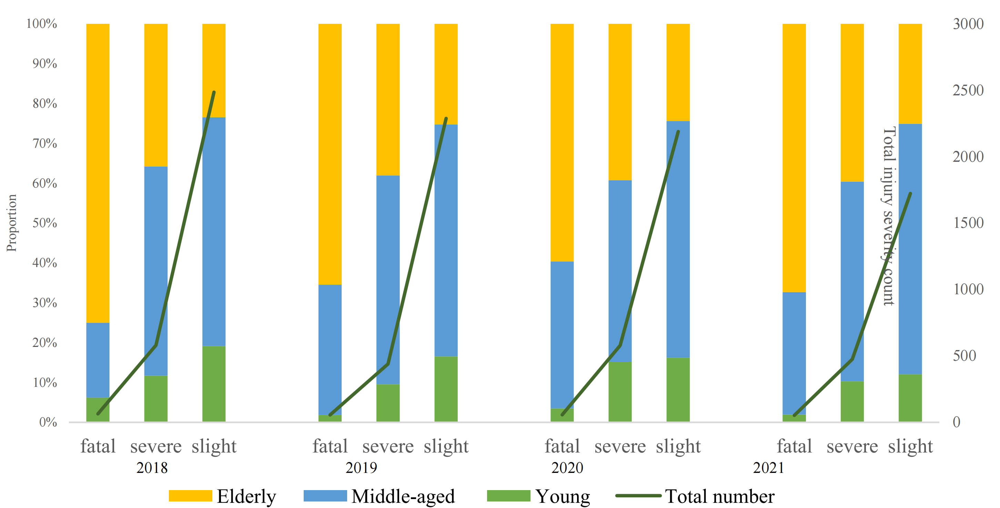
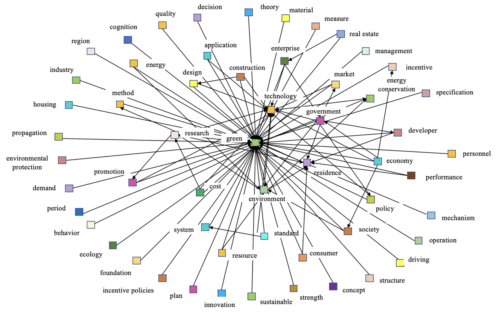
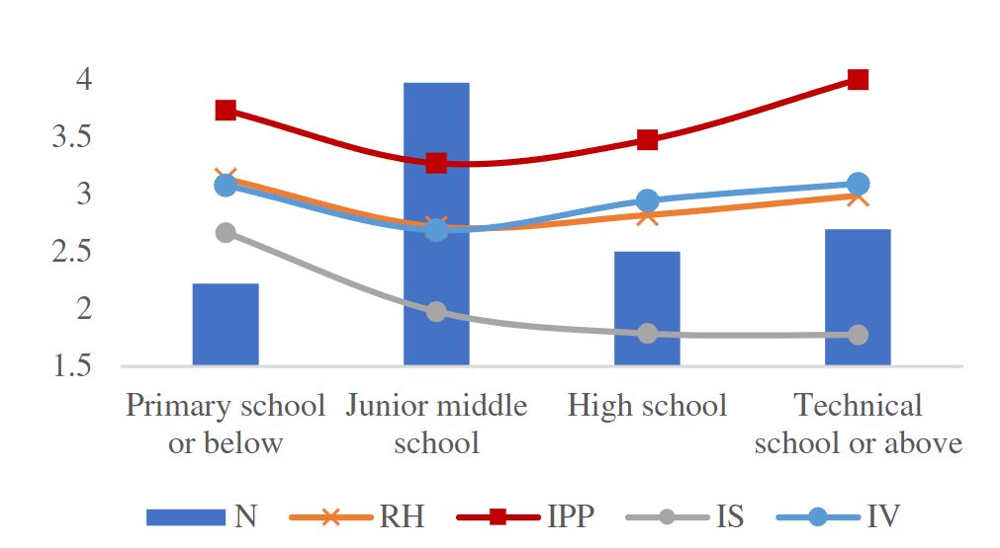
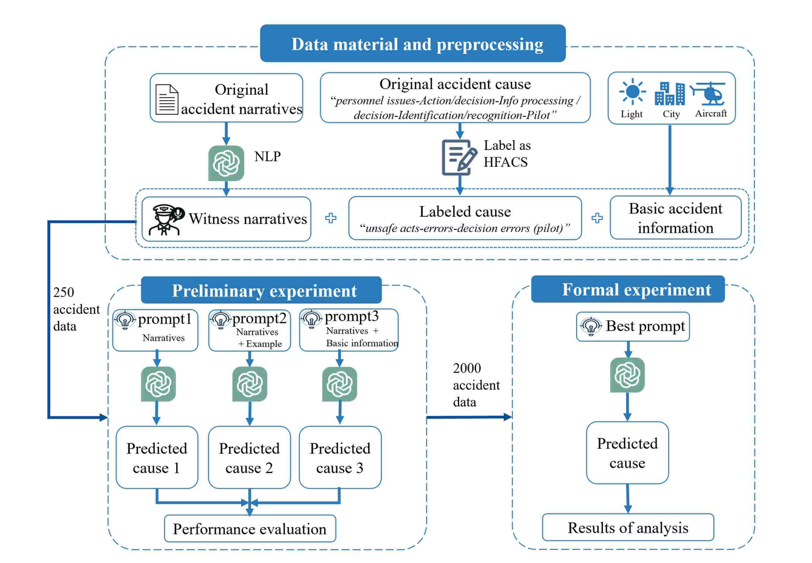
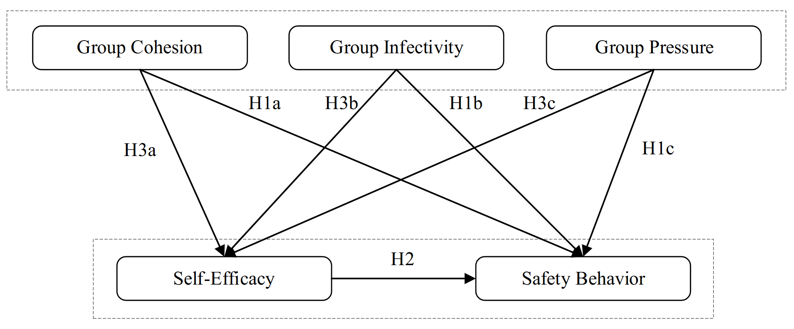
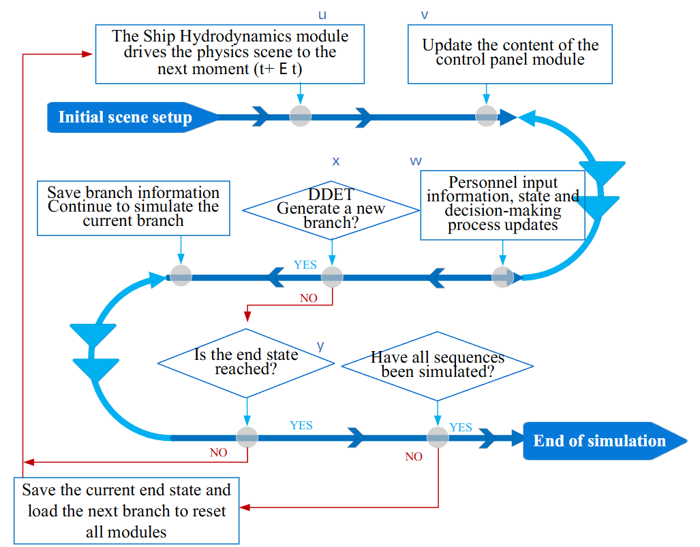

Publications
Profiles: Google Scholar
Journal Articles
-
Exploring the dynamic determinants of general aviation accidents across flight phases and time: A random parameter bivariate probit approach with heterogeneity in means
Qingli Liu, P. Song, F. Li* • Analytic Methods in Accident Research • 47:100386 • 2025 • JCR Q1Develops a dynamic accident risk model incorporating flight phases, temporal variations, and unobserved heterogeneity, revealing how safety determinants evolve across operational contexts.

-
Accident investigation via LLMs reasoning: HFACS-guided Chain-of-Thoughts enhance general aviation safety
Qingli Liu, F. Li*, K. K. H. Ng, J. Han, S. Feng • Expert Systems with Applications • 269:126422 • 2025 • JCR Q1Introduces an HFACS-guided Chain-of-Thought framework that constrains LLM reasoning with domain knowledge, improving the reliability, interpretability, and applicability of AI-assisted accident investigation.

-
Unveiling the determinants of injury severities across age groups and time: A deep dive into the unobserved heterogeneity among pedestrian crashes
Qingli Liu, F. Li*, K. K. H. Ng • Analytic Methods in Accident Research • 44:100336 • 2024 • JCR Q1Investigates heterogeneous injury mechanisms across age groups and time periods, demonstrating that crash outcomes are shaped by complex population-level variations.

-
Exploring the driving mechanism and path of BIM for green buildings
Y. Yang, B. Zhao*, Qingli Liu • Journal of Civil Engineering and Management • 30(1):67–84 • 2024 • JCR Q2Examines the interaction among technological, organizational, and environmental factors influencing BIM adoption in sustainable construction development.

-
Construction workers’ representativeness heuristic in decision making: The impact of demographic factors
Qingli Liu, G. Ye*, J. Yang, Q. Xiang, Q. Liu • Journal of Construction Engineering and Management • 148(4):04022005 • 2022 • JCR Q1Explores how demographic characteristics influence heuristic-based decisions among construction workers, linking cognitive mechanisms with safety-related behaviors.

-
Influence of physical fatigue on unsafe behaviour of construction workers
G. Ye*, Y. Wang, M. Ren, Qingli Liu, J. Yu • Journal of Safety Science and Technology • 19(1):122–127 • 2023Investigates the relationship between physical fatigue and unsafe behaviors in construction workers, highlighting human factors underlying occupational safety risks.
Conference Papers
-
Navigating the Spectrum of Risk: A Review of Human-AI Collaboration Challenges Across the Lifespan
Qingli Liu, P. M. Lee, F. Li* • 33rd International Conference on Transdisciplinary Engineering • 2026Reviews how human-AI interaction risks emerge across different life stages and synthesizes factors influencing vulnerability, trust, autonomy, and safety in AI-enabled interactions.
-
Show the Way: Accelerating General Aviation Accident Investigations through LLMs and HFACS
Qingli Liu, Y. Yan, F. Li*, S. Feng • AHFE 2024 • Advances in Human Factors of Transportation, Vol.148Explores how LLMs combined with HFACS can support faster, more structured, and knowledge-guided general aviation accident investigations.

-
Group Dynamics and Air Traffic Controllers’ Safety Behaviors: Self-Efficacy as a Mediator
Qingli Liu, S. Han, F. Li, C. H. Lee • Leveraging Transdisciplinary Engineering in a Changing and Connected World • IOS Press • 2023Examines how group dynamics influence safety behaviors among air traffic controllers through psychological mechanisms.

-
Assessment of the Crew On-Duty Status Based on the Dynamic Probabilistic Risk Platform
S. Han, F. Li*, T. Wang, Y. Zhang, Qingli Liu • Proceedings of the AAAI Symposium Series • 1(1):73–79 • 2023Develops a dynamic probabilistic approach for assessing crew operational status and supporting adaptive aviation safety management.

Under Review / Manuscripts
-
From Accident Evidence to Causal Graphs: Field-Theory-Guided Reliable General Aviation Accident Investigation with LLMs
Qingli Liu, R. Huang, F. Li* • Knowledge-Based Systems • Second-round review • JCR Q1Develops a field-theory-guided framework that transforms accident evidence into causal graphs, improving the reliability, explainability, and domain consistency of LLM-based accident investigation.
-
ULOGDebrief: A Phase-Aware Lazy Tool-Calling Framework for Conversational Analysis of UAV Flight Logs
Yuqi Yan, Gabriel Lodewijks, Boyang Li*, Qingli Liu* • Applied Soft Computing • Under reviewProposes a phase-aware lazy tool-calling framework for conversational UAV flight-log analysis, enabling efficient and context-aware interpretation of complex operational data through large language models.
-
How human-AI interaction risks emerge across the lifespan: A systematic review and framework synthesis
Qingli Liu, F. Li* • Advanced Engineering Informatics • Under reviewSynthesizes lifespan-related human-AI interaction risks and proposes a framework linking user characteristics, interaction contexts, and emerging safety challenges in AI-enabled systems.
-
Workload-Transition Intensity and Frequency Shape Operator Adaptation Evidence from Behavioral and Eye-Tracking Data
R. Huang, Y. Chen, Qingli Liu, H. Qiao, F. Li* • International Journal of Human-Computer Interaction • Under reviewInvestigates how workload transitions influence operator adaptation using behavioral measures and eye-tracking evidence, providing insights into human performance under dynamic operational conditions.